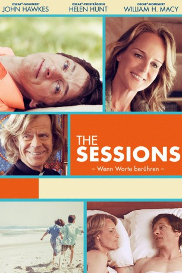

#2455 The Sessions - Wenn Worte berühren
Alternativ: The Sessions
Auszeichnungen: für 1 Oscars nominiert
 
 IMDB-Wertung: 7.2 / 10
IMDB-Wertung: 7.2 / 10  Metascore: 79
Metascore: 79 
Mark O'Brien leidet an Kinderlähmung. Das heißt, er ist zur beinahe vollkommenen Bewegungsunfähigkeit verdammt und muss die meiste Zeit des Tages in einer Eisernen Lunge verbringen. Im Alter von 38 Jahren fasst der eloquente Schriftsteller und begabte Poet einen ungewöhnlichen Entschluss. Er will Sex haben. Nachdem er sich beim örtlichen Pfarrer die "Erlaubnis" dazu geholt hat, findet Mark in der Sex-Therapeutin Cheryl, die sich auf derartige Fälle spezialisiert hat, die ideale Partnerin, um endlich seine Unschuld zu verlieren.
Jahr: 2012
Dauer: 95 Minuten
FSK: 12
Land: USA Studio: Fox Searchlight PicturesTonspuren: DTS - ,
Untertitel:
Auflösung: 1080p (1920x1040) Größe: 3891 MB
Genre: Drama, Komödie, Liebe, Biographie
Regisseur: Ben Lewin
Drehbuch: Ben Lewin, Mark O'Brien
Soundtrack: Marco Beltrami
Darsteller:
 John Hawkes als Mark
John Hawkes als Mark- Helen Hunt als Cheryl
 William H. Macy als Father Brendan
William H. Macy als Father Brendan Moon Bloodgood als Vera
Moon Bloodgood als Vera- Annika Marks als Amanda
 Adam Arkin als Josh
Adam Arkin als Josh Rhea Perlman als Mikvah Lady
Rhea Perlman als Mikvah Lady W. Earl Brown als Rod
W. Earl Brown als Rod Robin Weigert als Susan
Robin Weigert als Susan- Blake Lindsley als Dr. Laura White
 Ming Lo als Clerk
Ming Lo als Clerk Rusty Schwimmer als Joan
Rusty Schwimmer als Joan- Jennifer Kumiyama als Carmen
- Tobias Forrest als Greg
- Jarrod Bailey als Tony
 James Martinez als Matt
James Martinez als Matt- Jason Jack Edwards als Waiter
- J. Teddy Garces als Man in Elevator
- Daniel Quinn als E.R. Doctor
- B.J. Clinkscales als Ambulance Driver
- Gina-Raye Carter als Pill Nurse , uncredited
- Amanda Jane Fleming als Margaret , uncredited
 Stephane Nicoli als Patient , uncredited
Stephane Nicoli als Patient , uncredited- George F. Watson als Amanda's Husband with Baby , uncredited
- Paul MacLean als Young Mark
- Phoebe Lewin als Girl on Beach
- Jonathan Hanrahan als Unicyclist
- Terry als Cat
- Cody Lascala als Patient , uncredited
Datei: X:\2012(N-Z)\Sessions - Wenn Worte berühren, The (2012, FSK12, 1920x1040).mkv seit 11.11.2015
Festplatte: HD 2012(N-Z)-2013(A-H)
 Es gibt insgesamt 138 Filme in der Gruppe '2012(N-Z)'
Es gibt insgesamt 138 Filme in der Gruppe '2012(N-Z)'